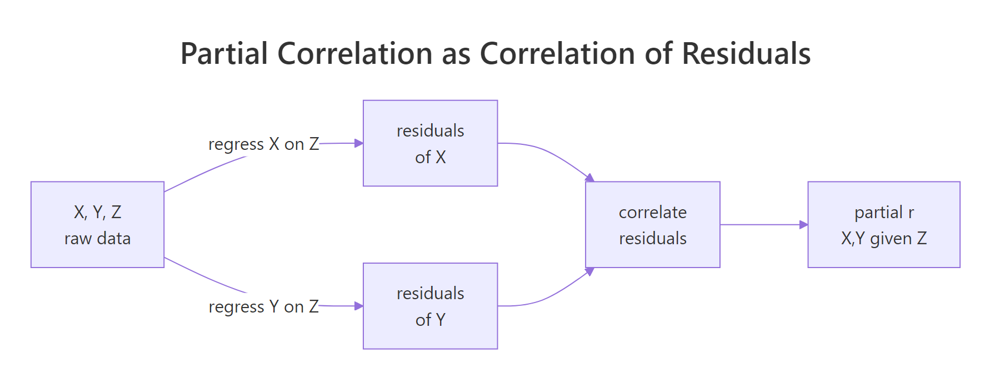
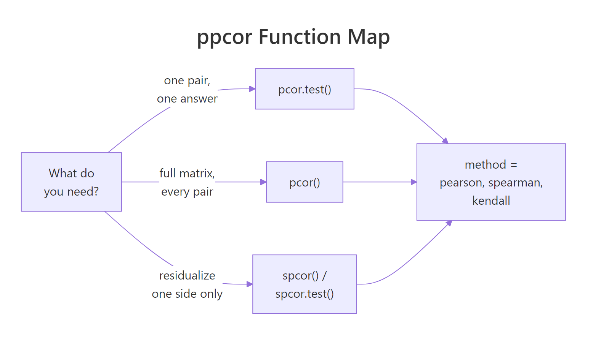

Partial Correlation in R: ppcor Package for Confounder Control
Partial correlation measures the linear association between two variables after removing the influence of one or more confounding variables. In R, the ppcor package exposes pcor(), pcor.test(), spcor(), and spcor.test() for partial and semi-partial correlation with Pearson, Spearman, or Kendall methods.
What does partial correlation reveal that regular correlation hides?
Suppose two variables look tightly linked, and you are ready to write up a finding. But a third variable you ignored could be driving both. Partial correlation strips that nuisance variable's effect from each side and reveals what is left. The shift from the raw correlation to the partial correlation is often the story. Let's see that shift on R's built-in mtcars before we open the hood.
The raw correlation between mpg and hp is -0.78, a strong negative relationship. Once we hold cyl fixed, the partial correlation collapses to -0.23 with a p-value of 0.21. In plain English: most of what looked like a horsepower effect on fuel economy was really a cylinder-count effect hiding behind it. Controlling for cylinders leaves almost nothing.
pcor.test() output has six columns that together tell the full story. estimate is the partial correlation, p.value and statistic come from a t-test with df = n − 2 − gp, n is the sample size, gp is how many variables you controlled for, and Method is the correlation type (Pearson by default).Try it: Rerun the same analysis on mpg and hp, but this time control for disp (engine displacement) instead of cyl. Does the partial correlation look weaker or stronger than the cyl version?
Click to reveal solution
Explanation: Controlling for disp leaves a stronger partial correlation (-0.33) than controlling for cyl (-0.23). Different confounders absorb different amounts of the raw correlation, so your choice of control matters.
How does ppcor actually compute the partial correlation?
Under the hood, the recipe is simple: regress each variable on the confounder, take the leftovers (the residuals), and correlate those. Whatever the confounder could explain has been removed from both sides before the correlation is measured.

Figure 1: Partial correlation equals the correlation of the residuals after regressing each variable on the confounder.
For three variables, the Pearson partial correlation has a closed-form expression that avoids running two regressions by hand:
$$r_{XY \mid Z} = \frac{r_{XY} - r_{XZ}\, r_{YZ}}{\sqrt{(1 - r_{XZ}^2)(1 - r_{YZ}^2)}}$$
Where:
- $r_{XY}$ is the zero-order (raw) correlation between X and Y
- $r_{XZ}$ is the raw correlation between X and the confounder Z
- $r_{YZ}$ is the raw correlation between Y and Z
- $r_{XY \mid Z}$ is the partial correlation of X and Y given Z
Let's plug the three zero-order correlations into this formula by hand and confirm the result matches what pcor.test() returned above.
The manual answer -0.2303439 matches pcor.test() to the last digit. The formula is not magic, it is just bookkeeping around three correlations.
If closed-form algebra is not your style, you can see the same answer by running the residualization explicitly with lm(). Regress each variable on cyl, pull the residuals, correlate them, and you get the same number.
Same answer, third time. This is also why partial correlation shows up inside multiple regression: an OLS coefficient is essentially a partial correlation scaled by the standard deviations of the residuals.
lm(mpg ~ hp + cyl), the hp slope is proportional to the partial correlation of mpg and hp given cyl. Regression just scales it by the ratio of the residual standard deviations.Try it: Compute the partial correlation of mpg and wt given disp by hand using the three zero-order correlations, then verify against pcor.test().
Click to reveal solution
Explanation: Even with disp held fixed, wt still pulls mpg down with r ≈ -0.48. Weight carries real information about fuel economy that engine size alone does not capture.
How do I control for multiple confounders at once?
One confounder is rarely enough. With ppcor you have two options: pass a data frame as the third argument to pcor.test() for a single pair with several controls, or call pcor() on a whole data frame to get the full partial-correlation matrix with each variable controlled against all the others.
With cyl, disp, and wt all held fixed, the partial correlation between mpg and hp is -0.31 (p = 0.10). Notice the gp column now reads 3, so the t-test correctly penalizes for three controls and the degrees of freedom drop from n - 3 to n - 5.
For an exploratory sweep across every pair at once, pcor() returns a list with six slots: estimate, p.value, statistic, n, gp, and method. Each slot is a full matrix. The estimate matrix shows partial correlations where every variable has been controlled for all the others in the input data frame.
Reading the matrix, the mpg row shows that wt is still a strong pull (partial r = -0.59, p = 0.0008) even after controlling for every other variable in the set. That survives the confounder gauntlet. The hp effect on mpg (-0.31) no longer reaches significance once the other mechanical variables are held constant.
z chews up degrees of freedom and often washes out relationships that matter. Include only variables you have a theoretical reason to believe are confounders, not everything in sight.Try it: Call pcor() on just mtcars[, c("mpg", "hp", "wt", "qsec")] and read off the partial correlation of mpg and wt. Is it bigger or smaller than the 5-variable version above?
Click to reveal solution
Explanation: With fewer controls, the partial correlation of mpg and wt is -0.84, much stronger than the -0.59 from the 5-variable case. Adding cyl and disp (both correlated with wt) eats into the residual variance that wt would otherwise explain.
When do I want semi-partial (spcor) instead of partial (pcor)?
pcor scrubs the confounder from both sides. Sometimes you only want to scrub one side. Semi-partial correlation, computed by spcor() and spcor.test(), residualizes Z from only the second variable and correlates that with the raw first variable. The formula uses the same numerator but a smaller denominator:
$$r_{X(Y \mid Z)} = \frac{r_{XY} - r_{XZ}\, r_{YZ}}{\sqrt{1 - r_{YZ}^2}}$$
Where:
- The numerator is the same as the partial correlation numerator
- The denominator has only one $(1 - r_{YZ}^2)$ factor, because Z was removed from Y only
- $r_{X(Y \mid Z)}$ is the semi-partial correlation of X with Y given Z

Figure 2: Pick pcor.test() for one pair, pcor() for a full matrix, and the spcor variants to residualize only one side.*
Let's compare both calculations on the same mpg, hp, cyl triplet. The numerators match, the denominators differ.
The semi-partial value (-0.12) is smaller in magnitude than the partial value (-0.23). The semi-partial is always closer to zero because it does not shrink its own denominator as aggressively. Semi-partial correlations answer a slightly different question: how much does hp explain uniquely about mpg beyond what cyl already explains?
spcor() the natural tool for "which predictor pulls its own weight?" questions in model selection.Try it: Using the iris dataset, compute both the partial and semi-partial correlation of Sepal.Length and Petal.Length given Petal.Width. Which denominator shrinks more?
Click to reveal solution
Explanation: The partial correlation (0.54) is about twice the semi-partial (0.29). That is because pcor removes Petal.Width from both sides, while spcor only removes it from Petal.Length. When the confounder correlates strongly with both variables, pcor shrinks the denominator on both sides and the ratio grows.
How do I run nonparametric partial correlation?
Pearson partial correlation assumes linear relationships and roughly symmetric distributions. When either assumption breaks, a rank-based method gives you a more honest answer. Both pcor.test() and pcor() accept method = "spearman" for rank-based partial correlation and method = "kendall" for concordance-based.
Swapping to Spearman strengthens the partial correlation between mpg and hp to -0.41 (now significant at p = 0.02). Kendall lands in between at -0.32. Which should you trust? Look at your data.
| Method | When to use | Tradeoff |
|---|---|---|
| Pearson | Linear relationship, no outliers, near-normal distributions | Most efficient when assumptions hold, misleading when they break |
| Spearman | Monotonic but nonlinear relationships, some outliers | Robust to nonlinearity, less efficient than Pearson under ideal conditions |
| Kendall | Small samples, many tied ranks, concordance interpretation | More conservative, slightly lower power, natural interpretation as concordance probability |
Try it: On the same triplet, run both Spearman and Kendall and compare the estimates. Would you report the stronger one, the more conservative one, or both?
Click to reveal solution
Explanation: Spearman and Kendall tell a consistent story (weight still matters once you control for displacement), but Kendall's concordance-based estimator is more conservative. Reporting both is a good habit when the assumptions behind Pearson are shaky.
What assumptions and pitfalls should I watch for?
Partial correlation is powerful but it trusts you. Four assumptions and pitfalls deserve your attention before you stake a conclusion on a partial r.
- Linearity. Pearson partial correlation captures only linear relationships. If the true relationship is U-shaped, the partial correlation can be near zero while the variables are strongly related.
- Unmeasured confounders. Partial correlation removes what you measured, nothing more. A lurking variable you did not include will still bias your answer.
- Sample size and degrees of freedom. The t-test uses df = n − 2 − gp. With 32 cars and 4 controls, you are already down to 26 degrees of freedom. Keep an eye on the
gpcolumn. - Over-controlling on a post-treatment variable. If Z is caused by X, residualizing Z throws away part of X's real effect on Y. This is a common way to accidentally bias a study toward null results.
A residual-vs-residual scatter is a cheap sanity check on the linearity assumption. If you see a clear curve in the residual plot, Pearson partial correlation is lying to you and you should switch to Spearman or model the nonlinearity explicitly.
A roughly linear cloud with no obvious curvature says Pearson is a reasonable choice. A banana-shaped scatter is a warning flag.
Try it: Apply a log transformation to hp and rerun the partial correlation. Does the partial r change appreciably? If so, the relationship was not purely linear.
Click to reveal solution
Explanation: After a log transform, the partial correlation grows from -0.23 to -0.36. That means part of the hp effect was nonlinear; Pearson on the raw scale missed it. Either transform the variable before running the correlation, or switch to Spearman.
Practice Exercises
Exercise 1: Partial correlation on iris
On the iris dataset, compute the partial correlation between Sepal.Length and Petal.Length controlling for Petal.Width. Save the full pcor.test() result to my_iris_pc and print the estimate and p-value only.
Click to reveal solution
Explanation: Even after removing Petal.Width, sepal length and petal length remain strongly correlated at 0.54 with a vanishingly small p-value. The iris morphology has a genuine sepal-petal link that survives the confounder.
Exercise 2: Hunt the strongest partial correlation
Using pcor() on mtcars[, c("mpg", "hp", "wt", "disp", "cyl")], find the pair with the largest absolute partial correlation. Save the full pcor() result to my_mt_pc and report the pair plus the value. Explain why that pair survives even after every other variable is held fixed.
Click to reveal solution
Explanation: The largest partial correlation is between disp and wt at 0.65. Heavier cars tend to have larger engines, and that mechanical link is strong enough to survive controlling for mpg, hp, and cyl. It is not a confounder story, it is a structural relationship between two features of the same car.
Complete Example: Confounder Audit on mtcars
Let's tie the whole workflow together with a focal pair, mpg and qsec (quarter-mile time). The raw correlation says faster cars over a quarter mile tend to get worse mileage, which sounds right. But we should audit how stable that relationship is under different controls.
The zero-order correlation of 0.42 does not survive the audit intact. Controlling for cyl flips the sign (-0.20). Controlling for wt alone actually grows the correlation to 0.55, a case of suppression where weight was masking a genuine link. Controlling for everything at once crashes the partial correlation to 0.10 with a p-value of 0.61. The "faster cars guzzle fuel" narrative is really three stories tangled together: cylinder-count effects, weight effects, and a small residual link after both are accounted for.
That is exactly what confounder audits are for. A single partial correlation is useful; a structured audit is how you find out which controls are doing the work.
Summary
| Function | Purpose | Returns | Key arguments |
|---|---|---|---|
pcor() |
Partial correlations for every pair, each controlled for all others | List of matrices: estimate, p.value, statistic, n, gp, method |
data frame, method |
pcor.test() |
Partial correlation for one pair, one or many controls | One-row data frame with the same six fields | x, y, z, method |
spcor() |
Semi-partial correlations for every pair (Z removed from one side only) | Same six-slot list as pcor() |
data frame, method |
spcor.test() |
Semi-partial correlation for one pair | One-row data frame | x, y, z, method |
Remember the recipe: subtract out what the confounder explains from each side, then correlate what is left. The partial correlation tells you what remains after the confounder has been accounted for, and the p-value tells you whether the remainder is distinguishable from zero.
References
- Kim, S. (2015). ppcor: An R Package for a Fast Calculation to Semi-partial Correlation Coefficients. Communications for Statistical Applications and Methods, 22(6). Link
- ppcor CRAN manual (PDF). Link
- ppcor reference on RDocumentation,
pcor. Link - ppcor reference on RDocumentation,
pcor.test. Link - Cohen, J., Cohen, P., West, S. G., & Aiken, L. S. (2003). Applied Multiple Regression/Correlation Analysis for the Behavioral Sciences, 3rd ed. Routledge.
- Pearl, J. (2009). Causality: Models, Reasoning, and Inference, 2nd ed. Cambridge University Press.
- R Documentation for
cor(). Link
Continue Learning
- Correlation in R, the parent article on Pearson, Spearman, and Kendall zero-order correlation with significance tests.
- Linear Regression Assumptions in R. The residualization that drives partial correlation also drives ordinary least squares; this walks through the assumptions that make both work.
- Regression Diagnostics in R. Once you move from partial correlation to a full model, these are the checks that keep you honest.